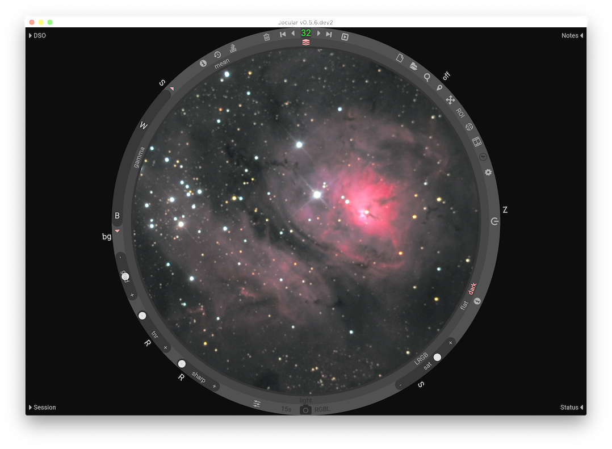

Welcome to Jocular!
Jocular is a tool that supports astronomical observing using a camera and telescope or lens.
Jocular’s principal use is the observation of astronomical objects in near real-time by connecting a camera to a telescope or suitable lens. Jocular also supports session-planning through extensive deep sky object (DSO) databases, helps to manage your captures, enables the reloading of previously-captured images, and can be used to annotate your images.
The philosophy behind Jocular is to allow the user to focus on observing, by presenting a minimal, distraction-free interface and a recompute strategy that allows most decisions – apart from where to point the scope – to be reversed during the course of the observation itself.
Indices and tables
Installing Jocular
New users
In more depth
Advanced features
Solving problems